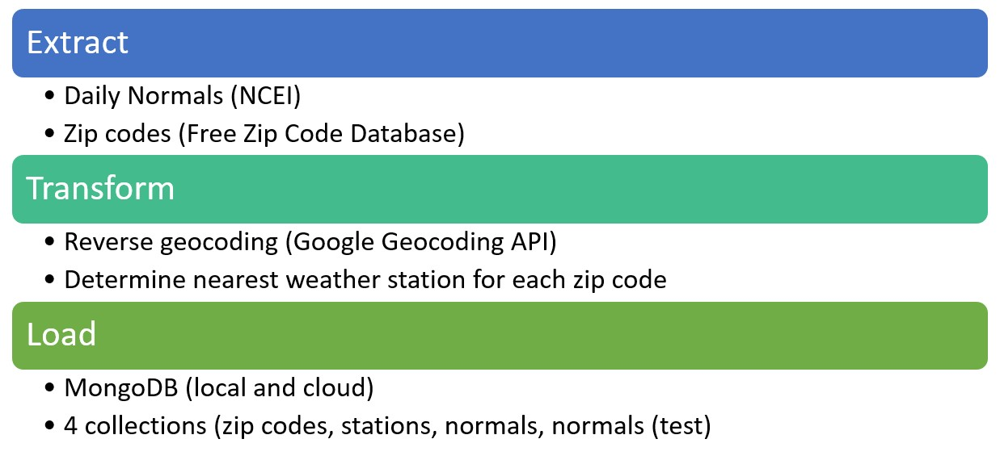

Methodology
ETL

Extract
- Daily Normals
- The daily normals for 8 states in the Southeast United States were downloaded from the dataset 1981-2010 U.S. Climate Normals which is distributed by the National Centers for Environmental Information (NCEI).
- The 8 states included are AL, GA, KY, NC, SC, TN, WV, and VA.
- All Southeast US Zipcodes
Transform
- Daily Normals
- This dataset included latitude and longitude for each station but did not include state/county/zipcode.
- State was extracted from the station name using regex.
- Zipcode and county were identified using reverse geocoding. This process was performed using the Google Geocoding API.
- In order to allow for filtering by date range, a faux year (2008) was added to each calendar day in the dataset.
- An initial visualization of one station was created using matplotlib in order to receive client feedback.
- All Southeast US Zipcodes
- Duplicate and inactive zipcodes were removed from the dataset.
- The nearest weather station for each zipcode was determined using this formula.
- In theory, this process could have been skipped, and the application could have found the closest weather station using the Google Geocoding API. This approach was not chosen due to financial limitations.
Load
- This data was uploaded into a local MongoDB database for testing and a Cloud Atlas MongoDB database for deployment.
- Four collections were uploaded to each database: station metadata, zipcodes with nearest weather station, normals data for all stations and a smaller version of the normals dataset for testing.
Libraries
- Python
- datetime
- dotenv
- Flask
- json
- math
- matplotlib
- numpy
- os
- pandas
- PyMongo
- re
- requests
- time
- JavaScript
- D3.js
- DataTables.js
- Date Range Picker
- Leaflet.js
- Plotly.js
Web Design
App Architecture
Flask API
-
A total of 5 Flask API routes were created.
- All normals: This route returns recorded daily normals for all stations in the dataset.
- All stations: This route returns the metadata for all stations in the dataset.
- All zipcodes: This route returns all zipcodes in the dataset and their nearest weather station.
- Normals filtered by zipcode: This route first determines the nearest weather station based on the zipcode. It then returns all daily normals for this weather station.
- Normals filtered by zipcode and date range: This route first determines the nearest weather station based on the zipcode. It then returns daily normals for this weather station filtered by the given date range. This route ignores the year(s) of the date.
JavaScript
- The api calls were performed in Javascript in order to access the data for visualization.